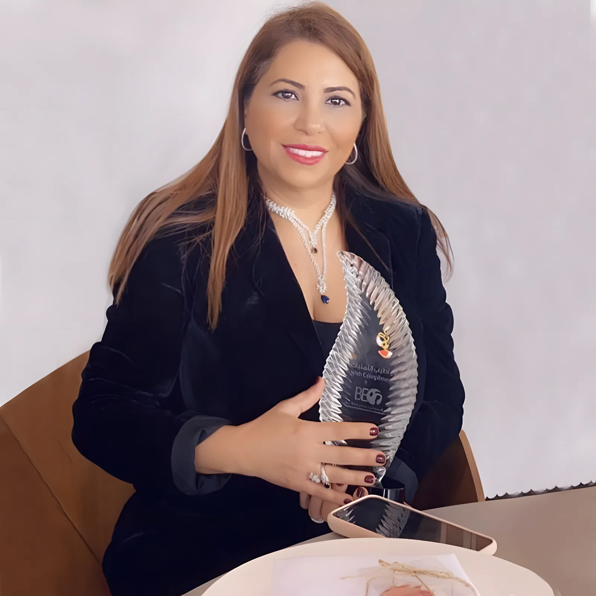
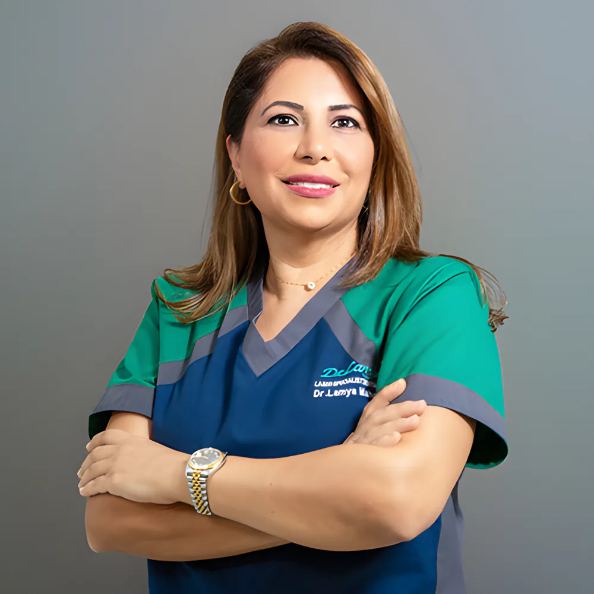
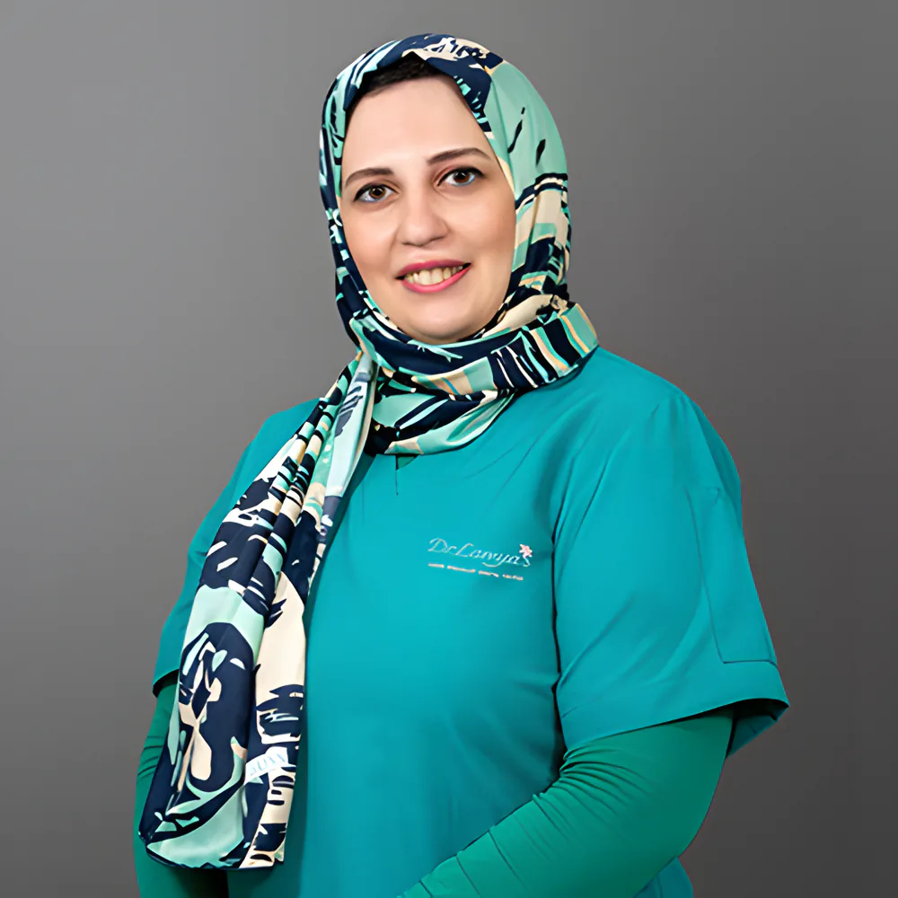
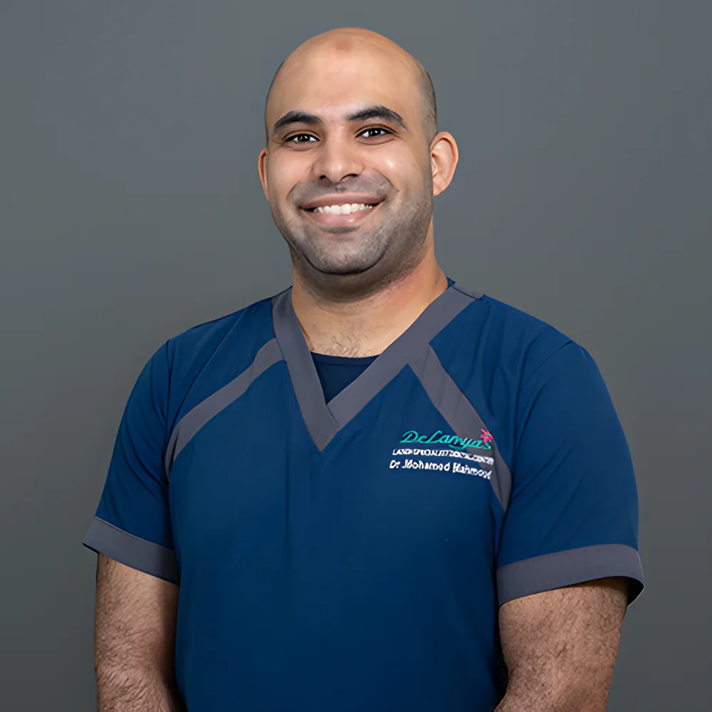
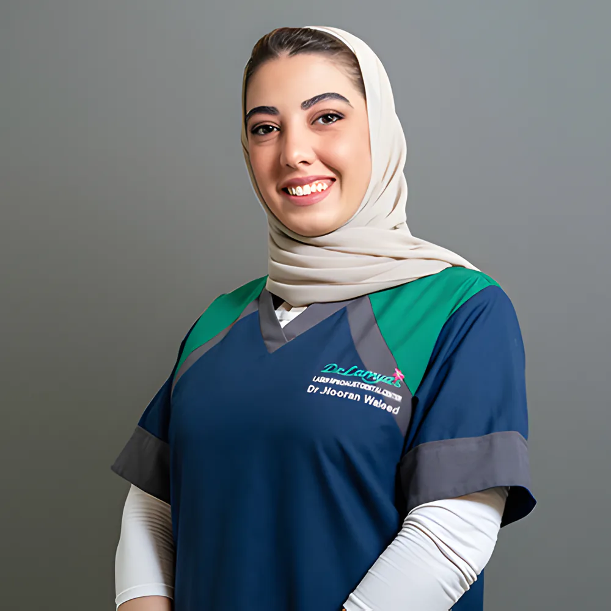
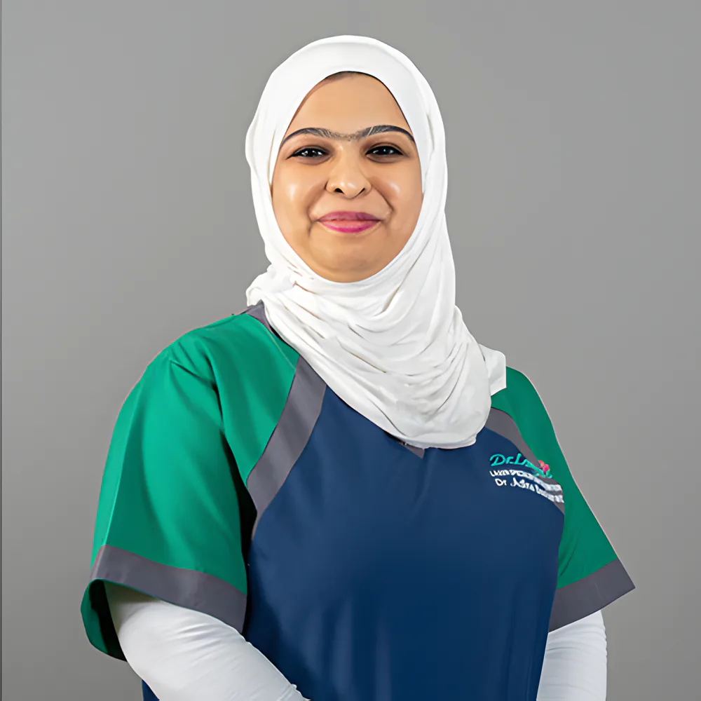
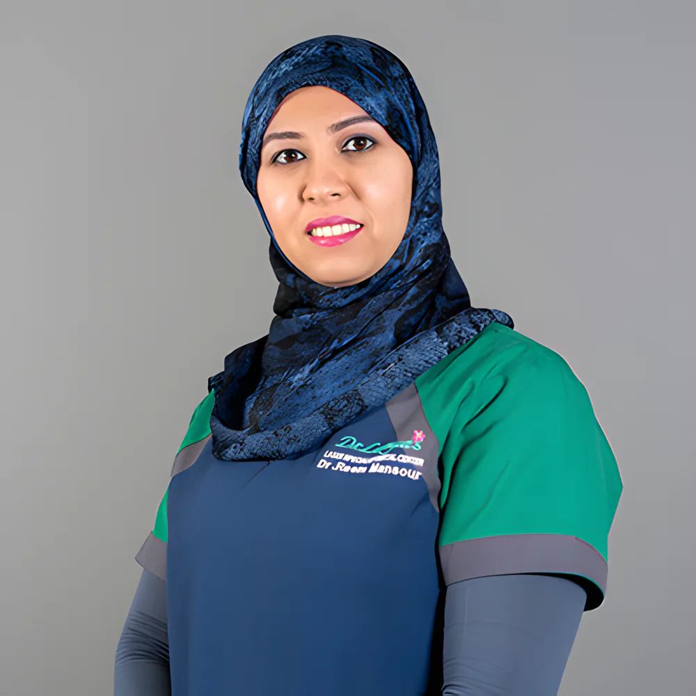
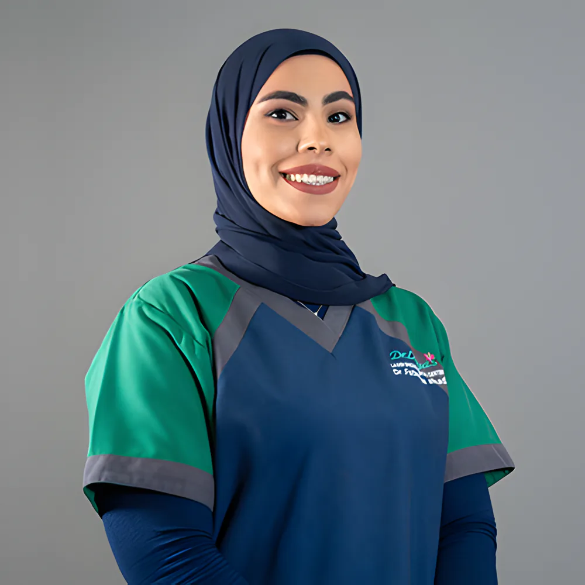
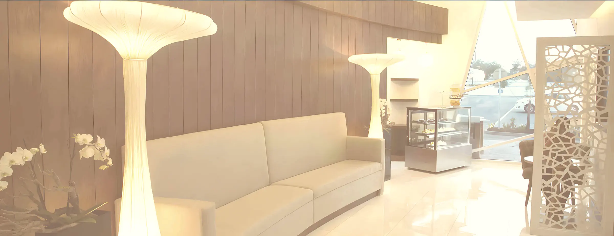
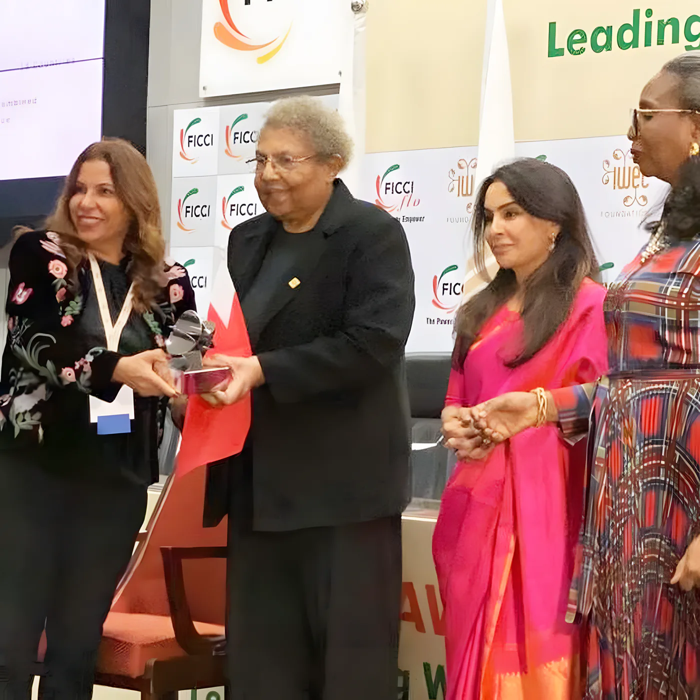

د. لمياء محمود
المؤسِّسة والرئيسة التنفيذية · أخصائية طب الأسنان بالليزر
ماجستير طب الأسنان بالليزر من جامعة آخن، والماجستير الأوروبي في تطبيقات الليزر الفموية (EMOLA). معتمدة في التخدير بأكسيد النيتروز.

أول مركز متخصص لطب الأسنان بالليزر في مملكة البحرين ودول الخليج. كل تخصصات الأسنان تحت سقف واحد، من الفحص والتنظيف إلى الزراعة وتقويم Invisalign وعلاج اللثة بالليزر، في المحرق والرفاع والجنبية.
مفتوح الآنالفروع الثلاثة: من السبت إلى الأربعاء 9 صباحًا – 8 مساءً، والخميس 9 صباحًا – 5 مساءً.
علاج الليزر عادةً أقل تدخلًا من الطرق التقليدية: في أغلب الحالات بلا حفر، بلا إبر، وبلا ألم. كنّا من أوائل العيادات التي أدخلت طب الأسنان بالليزر إلى البحرين، ومراكزنا تضم أكبر عدد من أجهزة الليزر في المملكة.

بعض الأجهزة في مراكزنا، من صورنا.
علاجات الأنسجة الصلبة والرخوة بدقة عالية في توجيه الشعاع.
ليزر لكل الأنسجة، لعلاجات متعددة بأقل ألم وإزعاج.
للجراحة وتخفيف الألم وتسريع الشفاء، وتبييض الأسنان في نحو 20 دقيقة.
للجراحة والزراعة وتعقيم قنوات الجذور وجيوب اللثة، والتبييض ومشاكل مفصل الفك.
علاج الشخير بالليزر، الجلسة نحو 20 دقيقة.
كل التخصصات تحت سقف واحد، مع الأشعة الرقمية وكاميرات الفم والمجاهر والزراعة الموجَّهة بالكمبيوتر.
ثلاثة أخصائيين في الليزر بشهادات ماجستير من آخن، وأخصائية أطفال، وطبيبة معتمدة في Invisalign، وأطباء أسنان عامون، إضافة إلى أطباء زائرين. اطلب الطبيب بالاسم عند الاتصال.

المؤسِّسة والرئيسة التنفيذية · أخصائية طب الأسنان بالليزر
ماجستير طب الأسنان بالليزر من جامعة آخن، والماجستير الأوروبي في تطبيقات الليزر الفموية (EMOLA). معتمدة في التخدير بأكسيد النيتروز.

أخصائية طب الأسنان بالليزر
ماجستير الليزر، جامعة RWTH آخن (2017).

أخصائي طب الأسنان بالليزر
ماجستير الليزر، جامعة RWTH آخن (2017).

أخصائية أسنان الأطفال
ماجستير طب أسنان الأطفال، جامعة عين شمس (2019).

طبيبة أسنان عامة · معتمدة في Invisalign
جامعة راجيف غاندي للعلوم الصحية (2002).

طبيبة أسنان عامة
بكالوريوس جراحة الفم والأسنان، جامعة عجمان (2006).

طبيبة أسنان عامة
بكالوريوس جراحة الفم والأسنان، الجامعة الأردنية (2017).

صالة الانتظار
أخبرنا عند الاتصال. نوفّر أكسيد النيتروز للمرضى الذين يعانون من قلق شديد، ود. لمياء ود. نوران معتمدتان في إعطائه. وكثير من العلاجات صارت تتم بالليزر بدل الحفر أو الإبرة.
وللأطفال، أول زيارة خلال ستة أشهر من ظهور أول سن، أو عند إتمام السنة الأولى.

أسّست د. لمياء المركز، وترأست جمعية البحرين لطب الأسنان، وهي رئيسة أول جمعية بحرينية لطب الأسنان بالليزر.
العلاج في مركز د. لمياء تغطيه معظم شركات التأمين الرئيسية في البحرين. اسأل فريقنا إن كانت وثيقتك تغطي علاجك.
نفس المواعيد في الفروع الثلاثة. اختر الأقرب لك، واضغط على الاسم لتراه على الخريطة.
الرفاع · The Walk، مبنى 649، طريق 1509، مجمع 915
مفتوح الآن
| السبت | 9 ص – 8 م |
| الأحد | 9 ص – 8 م |
| الاثنين | 9 ص – 8 م |
| الثلاثاء | 9 ص – 8 م |
| الأربعاء | 9 ص – 8 م |
| الخميس | 9 ص – 5 م |
| الجمعة | مغلق |